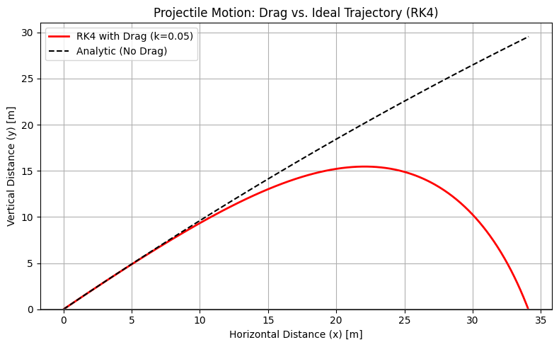

7. Initial Value Problems I
Chapter 7: Initial Value Problems I: The Basics
Project 1: Accuracy and Stability Showdown (Euler vs. RK4)
| Feature | Description |
|---|---|
| Goal | Simulate the Simple Harmonic Oscillator (SHO) using Euler's Method (\(\mathcal{O}(h)\)) and RK4 (\(\mathcal{O}(h^4)\)) to demonstrate the critical difference between a low-order and a high-order integrator, particularly RK4's local accuracy and Euler's exponential instability. |
| Model | Simple Harmonic Oscillator (SHO): \(x''(t) = -x\). This second-order ODE is converted into a coupled first-order system: \(\mathbf{S}' = [v, -x]\), where \(\mathbf{S}=[x, v]\). |
| Core Concept | Euler's Method assumes a constant slope over \(\Delta t\), causing systematic energy injection. RK4 uses a weighted average of four slopes, maintaining local stability but still suffering from long-term energy drift (a problem solved in Chapter 8). |
Complete Python Code
import numpy as np
import matplotlib.pyplot as plt
# ==========================================================
# Chapter 7 Codebook: Initial Value Problems I
# Project 1: Accuracy and Stability Showdown (Euler vs. RK4)
# ==========================================================
# ==========================================================
# 1. Define Model (Simple Harmonic Oscillator)
# ==========================================================
def sho_deriv(t, S):
"""
Derivative function for the Simple Harmonic Oscillator (x'' = -x).
S = [x, v], S' = [v, -x]
"""
x, v = S
# dx/dt = v, dv/dt = -x
return np.array([v, -x])
def sho_energy(S):
"""Calculates the total energy: E = 1/2 * (v^2 + x^2) (assuming m=k=1)."""
x, v = S
return 0.5 * (v**2 + x**2)
# Initial conditions and parameters
S0 = np.array([1.0, 0.0]) # Initial state: x(0)=1, v(0)=0
T_FINAL = 50.0 # Simulate for 50 periods (t=0 to 50)
N_STEPS = 5000 # Total number of steps
H = T_FINAL / N_STEPS # Time step size (Δt)
T_GRID = np.linspace(0, T_FINAL, N_STEPS + 1)
E_TRUE = sho_energy(S0) # True energy should be constant: 0.5 * (1^2 + 0^2) = 0.5
# ==========================================================
# 2. Implement Euler's Method (O(h) Accuracy)
# ==========================================================
def euler_solve(deriv_func, S0, h, N_steps):
"""Explicit Forward Euler integrator."""
S = S0.copy()
history = [S0.copy()]
for _ in range(N_steps):
S_prime = deriv_func(0, S) # t is ignored for autonomous system
S += h * S_prime
history.append(S.copy())
return np.array(history)
# ==========================================================
# 3. Implement RK4 Method (O(h⁴) Accuracy)
# ==========================================================
def rk4_solve(deriv_func, S0, h, N_steps):
"""Explicit Fourth-Order Runge-Kutta integrator (RK4)."""
S = S0.copy()
history = [S0.copy()]
for _ in range(N_steps):
# Calculate four slopes (k1, k2, k3, k4)
k1 = deriv_func(0, S)
k2 = deriv_func(0, S + 0.5 * h * k1)
k3 = deriv_func(0, S + 0.5 * h * k2)
k4 = deriv_func(0, S + h * k3)
# Apply weighted average (1/6, 2/6, 2/6, 1/6)
S += (h / 6.0) * (k1 + 2*k2 + 2*k3 + k4)
history.append(S.copy())
return np.array(history)
# ==========================================================
# 4. Run Solvers and Compute Energy Histories
# ==========================================================
# Run Euler's Method
history_euler = euler_solve(sho_deriv, S0, H, N_STEPS)
E_euler = np.array([sho_energy(S) for S in history_euler])
# Run RK4 Method
history_rk4 = rk4_solve(sho_deriv, S0, H, N_STEPS)
E_rk4 = np.array([sho_energy(S) for S in history_rk4])
# ==========================================================
# 5. Visualization and Analysis
# ==========================================================
fig, ax = plt.subplots(1, 2, figsize=(12, 5))
# --- Plot 1: Trajectory (x vs. t) ---
ax[0].plot(T_GRID, history_euler[:, 0], 'r--', label="Euler (x)")
ax[0].plot(T_GRID, history_rk4[:, 0], 'b-', label="RK4 (x)")
ax[0].plot(T_GRID, np.cos(T_GRID), 'k:', label="Analytic (cos(t))")
ax[0].set_title(f"SHO Trajectory Comparison (h={H:.4f})")
ax[0].set_xlabel("Time (t)")
ax[0].set_ylabel("Position (x)")
ax[0].legend()
ax[0].grid(True)
# --- Plot 2: Total Energy (Stability Check) ---
ax[1].plot(T_GRID, E_euler, 'r-', label="Euler Energy (Drifting)")
ax[1].plot(T_GRID, E_rk4, 'b-', label="RK4 Energy (Stable Locally)")
ax[1].axhline(E_TRUE, color='k', linestyle='--', label=f"True Energy (E={E_TRUE})")
ax[1].set_title("Stability and Energy Drift Over Time")
ax[1].set_xlabel("Time (t)")
ax[1].set_ylabel(r"Total Energy $E$")
ax[1].grid(True)
ax[1].legend()
plt.tight_layout()
plt.show()
# ==========================================================
# 6. Analysis Output
# ==========================================================
print("\n--- Stability and Accuracy Analysis ---")
print(f"Time Step (h): {H:.4f}")
print(f"Total Simulation Time: {T_FINAL} s")
print("-" * 35)
# Measure final energy deviation
E_euler_dev = (E_euler[-1] - E_TRUE) / E_TRUE
E_rk4_dev = (E_rk4[-1] - E_TRUE) / E_TRUE
print("Euler Method:")
print(f" Final Energy Deviation: {E_euler_dev * 100:.2f}% (Systematically Unstable)")
print("RK4 Method:")
print(f" Final Energy Deviation: {E_rk4_dev * 100:.2f}% (Locally Accurate, but still small drift)")
print("\nConclusion: Euler's method systematically injects energy into the system, causing an \nexponential growth in amplitude and energy (instability). RK4 maintains high local \naccuracy and energy conservation over this timescale, demonstrating its superiority as \na general-purpose integrator.")

--- Stability and Accuracy Analysis ---
Time Step (h): 0.0100
Total Simulation Time: 50.0 s
-----------------------------------
Euler Method:
Final Energy Deviation: 64.87% (Systematically Unstable)
RK4 Method:
Final Energy Deviation: -0.00% (Locally Accurate, but still small drift)
Conclusion: Euler's method systematically injects energy into the system, causing an
exponential growth in amplitude and energy (instability). RK4 maintains high local
accuracy and energy conservation over this timescale, demonstrating its superiority as
a general-purpose integrator.
Project 2: Coupled Systems — Projectile Motion with Drag
| Feature | Description |
|---|---|
| Goal | Simulate Projectile Motion with Quadratic Air Resistance (Drag), demonstrating how to convert a second-order vector problem into a coupled system of first-order ODEs and solve it using the stable RK4 method. |
| Model | Vectorial Second-Order ODE: \(\mathbf{r}''(t) = \mathbf{a}\). Force is gravity plus quadratic drag: $\mathbf{F} = m\mathbf{g} - k |
| System Conversion | The 2D (x, y) second-order system is converted into a 4D coupled first-order system: \(\mathbf{S}' = [v_x, v_y, a_x, a_y]\), where the state vector is \(\mathbf{S} = [x, y, v_x, v_y]\). |
| Core Concept | This system is non-conservative and dissipative (energy is lost due to drag), making the high-order RK4 method the ideal and most stable choice for a general prediction of the trajectory. |
Complete Python Code
import numpy as np
import matplotlib.pyplot as plt
# ==========================================================
# Chapter 7 Codebook: Initial Value Problems I
# Project 2: Coupled Systems — Projectile Motion with Drag
# ==========================================================
# ==========================================================
# 1. Setup Parameters and 4D Derivative Function
# ==========================================================
# Physical parameters
G = 9.81 # Gravity (m/s²)
M = 1.0 # Mass (kg)
K_DRAG = 0.05 # Quadratic Drag Coefficient (k)
# Initial conditions
THETA_DEG = 45.0
V0 = 50.0 # Initial velocity (m/s)
V0X = V0 * np.cos(np.deg2rad(THETA_DEG))
V0Y = V0 * np.sin(np.deg2rad(THETA_DEG))
# State vector S = [x, y, vx, vy]
S0 = np.array([0.0, 0.0, V0X, V0Y])
def drag_deriv(t, S):
"""
Derivative function for 4D coupled system: S' = [vx, vy, ax, ay].
Drag force: F_d = -k * |v| * v
"""
# Unpack state
x, y, vx, vy = S
# Velocity magnitude
v_mag = np.sqrt(vx**2 + vy**2)
# Calculate acceleration vector (a = F_net / m)
# Gravity component: F_g = [0, -m*g]
# Drag component: F_d = [-k*|v|*vx, -k*|v|*vy]
# Net Force Components
Fx_net = -K_DRAG * v_mag * vx
Fy_net = -M * G - K_DRAG * v_mag * vy
# Accelerations (ax, ay)
ax = Fx_net / M
ay = Fy_net / M
# Return the derivative vector S' = [vx, vy, ax, ay]
return np.array([vx, vy, ax, ay])
# ==========================================================
# 2. Implement RK4 Solver (Adapted from Project 1)
# ==========================================================
def rk4_solve(deriv_func, S0, h, T_max):
"""RK4 solver with a stopping condition (y < 0)."""
S = S0.copy()
history = [S0.copy()]
time = 0.0
while S[1] >= 0: # Stop when y-position (S[1]) hits or goes below ground
# Calculate four slopes
k1 = deriv_func(time, S)
k2 = deriv_func(time + 0.5 * h, S + 0.5 * h * k1)
k3 = deriv_func(time + 0.5 * h, S + 0.5 * h * k2)
k4 = deriv_func(time + h, S + h * k3)
# Apply weighted average
S += (h / 6.0) * (k1 + 2*k2 + 2*k3 + k4)
time += h
# Safety break and store
if len(history) > 50000: break
history.append(S.copy())
return np.array(history)
# ==========================================================
# 3. Run Simulation and Calculate Comparison Trajectory
# ==========================================================
# Simulation parameters
H = 0.01 # Time step size (Δt)
# Run RK4 for the drag trajectory
history_drag = rk4_solve(drag_deriv, S0, H, 100) # T_max is large, stop condition is y<0
# Analytic trajectory (no drag) for comparison: y(x) = x * tan(theta) - (g * x^2) / (2 * v0^2 * cos^2(theta))
def analytic_trajectory(x):
tan_theta = np.tan(np.deg2rad(THETA_DEG))
cos_sq_theta = np.cos(np.deg2rad(THETA_DEG))**2
return x * tan_theta - (G * x**2) / (2 * V0**2 * cos_sq_theta)
# Determine the max x-range for the analytic plot
X_DRAG_MAX = history_drag[-1, 0]
x_analytic_grid = np.linspace(0, X_DRAG_MAX, 100)
y_analytic_grid = analytic_trajectory(x_analytic_grid)
# ==========================================================
# 4. Visualization and Analysis
# ==========================================================
fig, ax = plt.subplots(figsize=(8, 5))
# Plot the drag trajectory
ax.plot(history_drag[:, 0], history_drag[:, 1], 'r-', linewidth=2, label=f"RK4 with Drag (k={K_DRAG})")
# Plot the ideal (no drag) trajectory
ax.plot(x_analytic_grid, y_analytic_grid, 'k--', label="Analytic (No Drag)")
ax.axhline(0, color='gray', linestyle='-')
ax.set_title("Projectile Motion: Drag vs. Ideal Trajectory (RK4)")
ax.set_xlabel("Horizontal Distance (x) [m]")
ax.set_ylabel("Vertical Distance (y) [m]")
ax.legend()
ax.grid(True)
ax.set_ylim(bottom=0)
plt.tight_layout()
plt.show()
# Final Analysis
range_drag = history_drag[-1, 0]
range_ideal = V0**2 * np.sin(2*np.deg2rad(THETA_DEG)) / G
print("\n--- Projectile Range Analysis ---")
print(f"Time Step (h): {H:.2f}")
print(f"Initial Velocity: {V0} m/s at {THETA_DEG}°")
print(f"Ideal Range (No Drag): {range_ideal:.2f} m")
print(f"RK4 Range (with Drag): {range_drag:.2f} m")
print(f"Range Reduction due to Drag: {range_ideal - range_drag:.2f} m")

--- Projectile Range Analysis ---
Time Step (h): 0.01
Initial Velocity: 50.0 m/s at 45.0°
Ideal Range (No Drag): 254.84 m
RK4 Range (with Drag): 34.11 m
Range Reduction due to Drag: 220.73 m